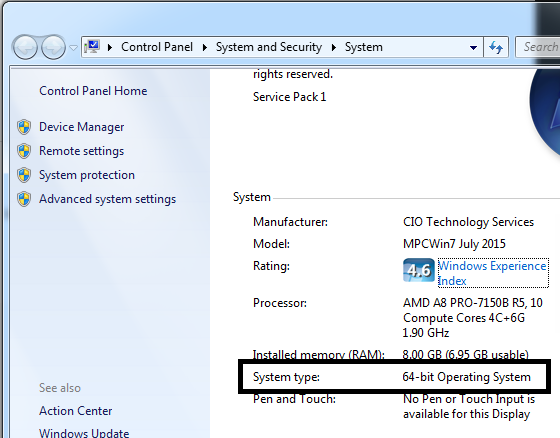
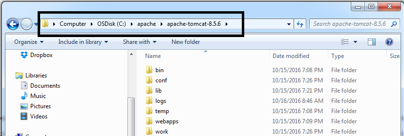
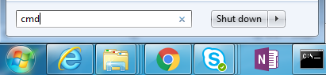
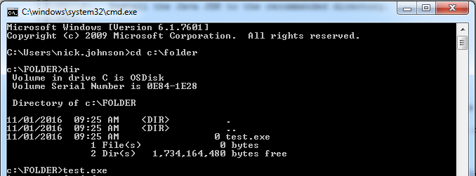
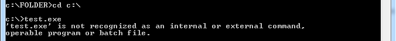
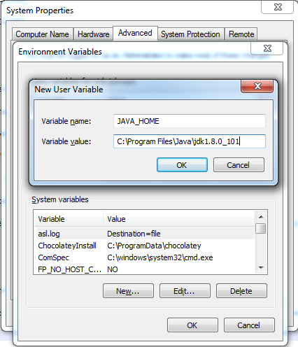
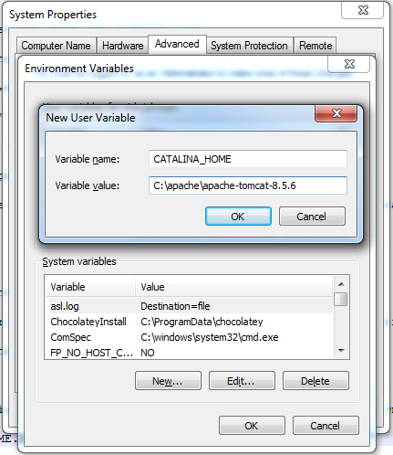
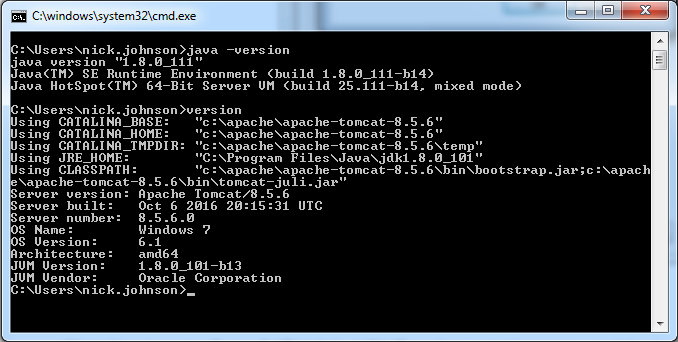

Lab - Install Java JDK and Apache Tomcat
- 30 minutes
- Install Java JDK
- Install Apache Tomcat
Install Java JDK 1.8 on Windows
1. Please start this lab by downloading the latest version of the Java SE Development Kit 8. You can find the download link from our tools page.
Windows users look for an .exe file that is a 32-bit or 64-bit version depending on the operating system that you are running. If in doubt, you can right-click on Computer and choose ‘Properties’.

When you have determined whether your system is 32-bit or 64-bit, choose one of the following files:
- Windows 32-bit: download the Windows x86 .exe file
- Windows 64-bit: download Windows x64 .exe file
2. Install the Java JDK to the recommended directory.
Typically, this is something like C:\Program Files\Java\
Install Apache Tomcat 8 on Windows
3. Please start this lab by downloading the latest version of Apache Tomcat 8. You can find the download link from our tools page.
Windows users look for a .zip file that is a 32-bit or 64-bit version depending on the operating system that you are running.
4. Extract the .zip file to C:\apache
Your files should now hold a directory structure similar to C:\apache\apache-tomcat-8.5.6:

Set Windows PATH variables for Java and Apache
On Windows, PATH variables help the command line find where a program is located.
Let’s say that we installed a program called TEST.exe into a folder at C:\FOLDER.
I can pull up a command line window by running the ‘cmd’ command:

If we navigate into the directory C:\FOLDER, we can run a command called test.exe from the command line.

But if I move out of the directory, to say C:\, the computer will not know where to find test.exe anymore.

There are two solutions to this problem. The first is to run programs with their full name and location like this:
The second solution is to add C:\FOLDER to the Windows PATH variable. If we do this, we can run test.exe from just about any location. The computer will know to check every directory that is included in the PATH variable.
We need to do this for key Java and Apache Tomcat directories.
5. Create a Java environment variable.
Right-click on Computer and go to Properties > Advanced System Settings > Environment Variables
Click ‘New’. Enter JAVA_HOME as the variable name, and the location of your Java directory as the variable value. On my computer this is C:\Program Files\Java\jdk1.8.0_101

6. Create an Apache Tomcat variable.
Click ‘New’ again. Enter CATALINA_HOME as the variable name, and the location of your Apache directory as the variable value. On my computer this is C:\apache\apache-tomcat-8.5.6

7. Add your JAVA_HOME and CATALINA_HOME variables to the PATH variable.
Find the PATH variable, and click ‘Edit’. On the very end of the variable value, at the far right, add the following (there are semicolons in front of the % signs):
;%JAVA_HOME%\bin ;%CATALINA_HOME%\bin
8. Close the Properties windows. Open a command line window by typing ‘cmd’ in the program search box above the Windows logo.
Type the following to test your Java installation and variables: java -version
Type the following to test your Apache installation and variables: version

If you see something like the picture above, you’re ready to go!
Install Java JDK on Mac OSX
1.
Install Apache Tomcat 8 on Mac OSX
1.